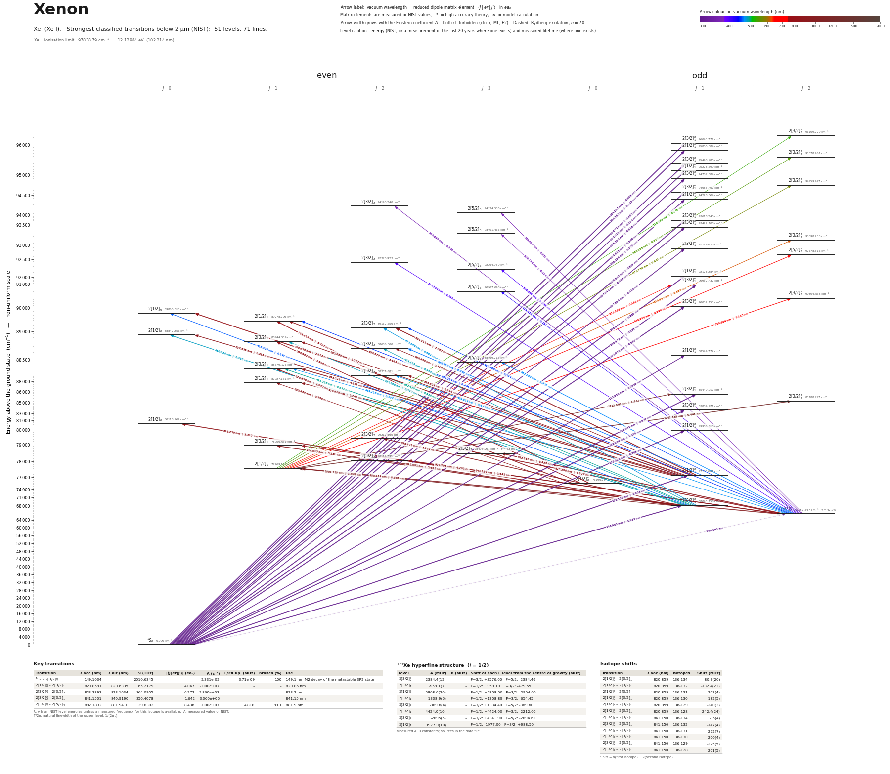

Xenon energy level diagram
Energy levels and transitions of neutral xenon (Xe I): the 71 strongest classified lines below 2 µm from the NIST Atomic Spectra Database and the 51 levels they connect, each line with its vacuum wavelength, frequency and, for 70 of them, the reduced dipole matrix element derived from the NIST transition rate. Measured lifetimes, transition rates, hyperfine constants and isotope shifts from the literature are included, each with its citation.
Hover a line or a level to isolate it, click to keep it selected. Scroll to zoom, drag to move.

Download: diagram (PDF) diagram (SVG) transitions (CSV) levels (CSV) source code

Key transitions of xenon
| Transition | λ vac (nm) | λ air (nm) | ν (THz) | |⟨J‖er‖J′⟩| (ea₀) | A (s⁻¹) | Γ/2π up. (MHz) | branch (%) | Use |
|---|---|---|---|---|---|---|---|---|
| 1S0 – 2[3/2]°2 | 149.1034 | – | 2010.6345 | – | 2.331e-02 | 3.71e-09 | 100 | 149.1 nm M2 decay of the metastable 3P2 state |
| 2[1/2]°0 – 2[3/2]1 | 820.8591 | 820.6335 | 365.2179 | 4.047 | 2.000e+07 | – | – | 820.86 nm |
| 2[3/2]°2 – 2[3/2]2 | 823.3897 | 823.1634 | 364.0955 | 6.277 | 2.860e+07 | – | – | 823.2 nm |
| 2[3/2]°2 – 2[3/2]1 | 841.1501 | 840.9190 | 356.4078 | 1.642 | 3.060e+06 | – | – | 841.15 nm |
| 2[3/2]°2 – 2[5/2]3 | 882.1832 | 881.9410 | 339.8302 | 8.436 | 3.000e+07 | 4.818 | 99.1 | 881.9 nm |
λ, ν from NIST level energies unless a measured frequency for this isotope is available. A: measured value or NIST. Γ/2π: natural linewidth of the upper level, 1/(2πτ).
129Xe hyperfine structure (I = 1/2)
| Level | A (MHz) | B (MHz) | Shift of each F level from the centre of gravity (MHz) |
|---|---|---|---|
| 2[3/2]°2 | -2384.4(12) | – | F=3/2: +3576.60 F=5/2: -2384.40 |
| 2[3/2]°1 | -959.1(7) | – | F=1/2: +959.10 F=3/2: -479.55 |
| 2[1/2]°1 | -5808.0(20) | – | F=1/2: +5808.00 F=3/2: -2904.00 |
| 2[3/2]1 | -1308.9(6) | – | F=1/2: +1308.89 F=3/2: -654.45 |
| 2[3/2]2 | -889.6(4) | – | F=3/2: +1334.40 F=5/2: -889.60 |
| 2[3/2]1 | -4424.0(10) | – | F=1/2: +4424.00 F=3/2: -2212.00 |
| 2[3/2]2 | -2895(5) | – | F=3/2: +4341.90 F=5/2: -2894.60 |
| 2[1/2]1 | 1977.0(10) | – | F=1/2: -1977.00 F=3/2: +988.50 |
Measured A, B constants; sources in the data file.
Isotope shifts
| Transition | λ vac (nm) | Isotopes | Shift (MHz) |
|---|---|---|---|
| 2[1/2]°0 – 2[3/2]1 | 820.859 | 136-134 | -80.9(20) |
| 2[1/2]°0 – 2[3/2]1 | 820.859 | 136-132 | -132.4(21) |
| 2[1/2]°0 – 2[3/2]1 | 820.859 | 136-131 | -203(4) |
| 2[1/2]°0 – 2[3/2]1 | 820.859 | 136-130 | -182(5) |
| 2[1/2]°0 – 2[3/2]1 | 820.859 | 136-129 | -240(3) |
| 2[1/2]°0 – 2[3/2]1 | 820.859 | 136-128 | -242.4(24) |
| 2[3/2]°2 – 2[3/2]1 | 841.150 | 136-134 | -95(4) |
| 2[3/2]°2 – 2[3/2]1 | 841.150 | 136-132 | -147(4) |
| 2[3/2]°2 – 2[3/2]1 | 841.150 | 136-131 | -222(7) |
| 2[3/2]°2 – 2[3/2]1 | 841.150 | 136-130 | -200(4) |
| 2[3/2]°2 – 2[3/2]1 | 841.150 | 136-129 | -275(5) |
| 2[3/2]°2 – 2[3/2]1 | 841.150 | 136-128 | -261(5) |
Shift = ν(first isotope) − ν(second isotope).
Listed Xe transitions below 2 µm
| Lower level | Upper level | λ vacuum (nm) | λ air (nm) | ν (THz) | Type | |⟨J‖er‖J′⟩| (ea₀) | A (s⁻¹) | Branching (%) | Source of matrix element / A |
|---|---|---|---|---|---|---|---|---|---|
| 1S0 | 2[3/2]°1 | 104.1170 | – | 2879.3798 | E1 | 0.363 NIST | 7.900e+07 NIST | – | NIST ASD (accuracy C+) |
| 1S0 | 2[1/2]°1 | 104.3835 | – | 2872.0293 | E1 | 0.315 NIST | 5.900e+07 NIST | – | NIST ASD (accuracy C) |
| 1S0 | 2[3/2]°1 | 104.7137 | – | 2862.9724 | E1 | 0.465 NIST | 1.270e+08 NIST | – | NIST ASD (accuracy C+) |
| 1S0 | 2[1/2]°1 | 105.0107 | – | 2854.8756 | E1 | 0.121 NIST | 8.500e+06 NIST | – | NIST ASD (accuracy D+) |
| 1S0 | 2[3/2]°1 | 105.4996 | – | 2841.6453 | E1 | 0.316 NIST | 5.750e+07 NIST | – | NIST ASD (accuracy C+) |
| 1S0 | 2[3/2]°1 | 105.6128 | – | 2838.5989 | E1 | 0.580 NIST | 1.930e+08 NIST | – | NIST ASD (accuracy C+) |
| 1S0 | 2[1/2]°1 | 106.1256 | – | 2824.8845 | E1 | 0.175 NIST | 1.740e+07 NIST | – | NIST ASD (accuracy C+) |
| 1S0 | 2[3/2]°1 | 106.8168 | – | 2806.6042 | E1 | 0.819 NIST | 3.720e+08 NIST | – | NIST ASD (accuracy C+) |
| 1S0 | 2[3/2]°1 | 107.0410 | – | 2800.7243 | E1 | 0.148 NIST | 1.200e+07 NIST | – | NIST ASD (accuracy D+) |
| 1S0 | 2[3/2]°1 | 107.8585 | – | 2779.4969 | E1 | 0.119 NIST | 7.600e+06 NIST | – | NIST ASD (accuracy D+) |
| 1S0 | 2[1/2]°1 | 108.5443 | – | 2761.9366 | E1 | 0.285 NIST | 4.280e+07 NIST | – | NIST ASD (accuracy C+) |
| 1S0 | 2[3/2]°1 | 109.9718 | – | 2726.0857 | E1 | 0.283 NIST | 4.080e+07 NIST | – | NIST ASD (accuracy C+) |
| 1S0 | 2[3/2]°1 | 111.0714 | – | 2699.0961 | E1 | 0.552 NIST | 1.500e+08 NIST | – | NIST ASD (accuracy C+) |
| 1S0 | 2[1/2]°1 | 112.9308 | – | 2654.6555 | E1 | 0.0969 NIST | 4.400e+06 NIST | – | NIST ASD (accuracy D+) |
| 1S0 | 2[3/2]°1 | 117.0412 | – | 2561.4273 | E1 | 0.574 NIST | 1.390e+08 NIST | – | NIST ASD (accuracy B+) |
| 1S0 | 2[3/2]°1 | 119.2038 | – | 2514.9581 | E1 | 1.220 NIST | 5.930e+08 NIST | – | NIST ASD (accuracy B+) |
| 1S0 | 2[1/2]°1 | 125.0209 | – | 2397.9385 | E1 | 0.208 NIST | 1.490e+07 NIST | – | NIST ASD (accuracy B+) |
| 1S0 | 2[1/2]°1 | 129.5588 | – | 2313.9493 | E1 | 0.903 NIST | 2.530e+08 NIST | – | NIST ASD (accuracy A+) |
| 1S0 | 2[3/2]°1 | 146.9612 | – | 2039.9425 | E1 | 1.133 NIST | 2.730e+08 NIST | – | NIST ASD (accuracy A+) |
| 1S0 | 2[3/2]°2 | 149.1034 | – | 2010.6345 | M2 | – | 2.331e-02 measured | 100 | Walhout, Witte, Rolston, Phys. Rev. Lett. 72, 2843 (1994) (abstract) |
| 2[3/2]°2 | 2[3/2]2 | 368.6950 | 368.5900 | 813.1179 | E1 | 0.236 NIST | 4.500e+05 NIST | – | NIST ASD (accuracy D) |
| 2[3/2]°2 | 2[5/2]3 | 369.4538 | 369.3487 | 811.4477 | E1 | 0.232 NIST | 3.100e+05 NIST | – | NIST ASD (accuracy D+) |
| 2[3/2]°2 | 2[5/2]3 | 379.7384 | 379.6306 | 789.4710 | E1 | 0.174 NIST | 1.600e+05 NIST | – | NIST ASD (accuracy C) |
| 2[3/2]°2 | 2[3/2]2 | 395.2042 | 395.0924 | 758.5761 | E1 | 0.292 NIST | 5.600e+05 NIST | – | NIST ASD (accuracy C+) |
| 2[3/2]°2 | 2[5/2]3 | 396.8663 | 396.7540 | 755.3991 | E1 | 0.338 NIST | 5.300e+05 NIST | – | NIST ASD (accuracy C+) |
| 2[3/2]°2 | 2[5/2]3 | 419.4711 | 419.3530 | 714.6915 | E1 | 0.237 NIST | 2.200e+05 NIST | – | NIST ASD (accuracy B) |
| 2[3/2]°2 | 2[1/2]1 | 450.2241 | 450.0979 | 665.8738 | E1 | 0.444 NIST | 1.460e+06 NIST | – | NIST ASD (accuracy C+) |
| 2[3/2]°2 | 2[3/2]2 | 452.5950 | 452.4681 | 662.3857 | E1 | 0.324 NIST | 4.600e+05 NIST | – | NIST ASD (accuracy C+) |
| 2[3/2]°1 | 2[1/2]0 | 458.4031 | 458.2747 | 653.9930 | E1 | 0.249 NIST | 1.300e+06 NIST | – | NIST ASD (accuracy C) |
| 2[3/2]°2 | 2[3/2]2 | 462.5571 | 462.4276 | 648.1199 | E1 | 0.769 NIST | 2.420e+06 NIST | – | NIST ASD (accuracy B) |
| 2[3/2]°2 | 2[5/2]3 | 467.2533 | 467.1226 | 641.6058 | E1 | 0.937 NIST | 2.490e+06 NIST | – | NIST ASD (accuracy B) |
| 2[3/2]°2 | 2[3/2]1 | 469.2285 | 469.0972 | 638.9051 | E1 | 0.207 NIST | 2.800e+05 NIST | – | NIST ASD (accuracy C+) |
| 2[3/2]°2 | 2[5/2]2 | 469.8335 | 469.7021 | 638.0823 | E1 | 0.434 NIST | 7.360e+05 NIST | – | NIST ASD (accuracy B) |
| 2[3/2]°1 | 2[3/2]2 | 473.5476 | 473.4152 | 633.0777 | E1 | 0.601 NIST | 1.380e+06 NIST | – | NIST ASD (accuracy C+) |
| 2[3/2]°1 | 2[1/2]0 | 480.8363 | 480.7019 | 623.4814 | E1 | 0.485 NIST | 4.290e+06 NIST | – | NIST ASD (accuracy B) |
| 2[3/2]°1 | 2[3/2]1 | 483.1057 | 482.9708 | 620.5525 | E1 | 0.317 NIST | 6.000e+05 NIST | – | NIST ASD (accuracy D+) |
| 2[3/2]°1 | 2[3/2]2 | 484.4646 | 484.3293 | 618.8119 | E1 | 0.444 NIST | 7.020e+05 NIST | – | NIST ASD (accuracy B) |
| 2[3/2]°1 | 2[3/2]1 | 491.7879 | 491.6506 | 609.5971 | E1 | 0.531 NIST | 1.600e+06 NIST | – | NIST ASD (accuracy C+) |
| 2[3/2]°1 | 2[5/2]2 | 492.4525 | 492.3151 | 608.7743 | E1 | 0.536 NIST | 9.740e+05 NIST | – | NIST ASD (accuracy B) |
| 2[1/2]1 | 2[3/2]°2 | 530.7834 | 530.6358 | 564.8112 | E1 | 0.243 NIST | 1.600e+05 NIST | – | NIST ASD (accuracy C+) |
| 2[1/2]1 | 2[3/2]°2 | 546.1551 | 546.0034 | 548.9145 | E1 | 0.317 NIST | 2.500e+05 NIST | – | NIST ASD (accuracy B+) |
| 2[1/2]1 | 2[3/2]°2 | 571.7297 | 571.5712 | 524.3605 | E1 | 0.402 NIST | 3.500e+05 NIST | – | NIST ASD (accuracy C+) |
| 2[1/2]1 | 2[3/2]°2 | 619.9971 | 619.8256 | 483.5385 | E1 | 0.623 NIST | 6.600e+05 NIST | – | NIST ASD (accuracy B+) |
| 2[1/2]1 | 2[5/2]°2 | 648.9558 | 648.7765 | 461.9613 | E1 | 0.796 NIST | 9.400e+05 NIST | – | NIST ASD (accuracy B) |
| 2[1/2]1 | 2[3/2]°1 | 731.8883 | 731.6867 | 409.6150 | E1 | 0.381 NIST | 2.500e+05 NIST | – | NIST ASD (accuracy C+) |
| 2[1/2]1 | 2[3/2]°2 | 738.8038 | 738.6004 | 405.7809 | E1 | 1.115 NIST | 1.250e+06 NIST | – | NIST ASD (accuracy B+) |
| 2[1/2]°0 | 2[1/2]1 | 764.4127 | 764.2023 | 392.1867 | E1 | 3.727 NIST | 2.100e+07 NIST | – | NIST ASD (accuracy C+) |
| 2[1/2]°1 | 2[1/2]0 | 788.9563 | 788.7393 | 379.9862 | E1 | 2.913 NIST | 3.500e+07 NIST | – | NIST ASD (accuracy C+) |
| 2[1/2]°0 | 2[3/2]1 | 796.9530 | 796.7338 | 376.1733 | E1 | 1.596 NIST | 3.400e+06 NIST | – | NIST ASD (accuracy D+) |
| 2[1/2]°0 | 2[3/2]1 | 820.8591 | 820.6335 | 365.2179 | E1 | 4.047 NIST | 2.000e+07 NIST | – | NIST ASD (accuracy C) |
| 2[3/2]°2 | 2[3/2]2 | 823.3897 | 823.1634 | 364.0955 | E1 | 6.277 NIST | 2.860e+07 NIST | – | NIST ASD (accuracy B+) |
| 2[1/2]°1 | 2[1/2]1 | 826.8792 | 826.6520 | 362.5590 | E1 | 3.683 NIST | 1.620e+07 NIST | – | NIST ASD (accuracy C+) |
| 2[3/2]°1 | 2[1/2]0 | 828.2392 | 828.0116 | 361.9636 | E1 | 3.217 NIST | 3.690e+07 NIST | – | NIST ASD (accuracy B) |
| 2[1/2]°1 | 2[3/2]2 | 834.9117 | 834.6823 | 359.0709 | E1 | 7.767 NIST | 4.200e+07 NIST | – | NIST ASD (accuracy C+) |
| 2[3/2]°2 | 2[3/2]1 | 841.1501 | 840.9190 | 356.4078 | E1 | 1.642 NIST | 3.060e+06 NIST | – | NIST ASD (accuracy B+) |
| 2[1/2]°0 | 2[1/2]1 | 852.4885 | 852.2543 | 351.6675 | E1 | 0.550 NIST | 3.300e+05 NIST | – | NIST ASD (accuracy D+) |
| 2[1/2]°1 | 2[1/2]0 | 857.8378 | 857.6022 | 349.4745 | E1 | 1.283 NIST | 5.280e+06 NIST | – | NIST ASD (accuracy B) |
| 2[1/2]°1 | 2[3/2]1 | 865.0880 | 864.8504 | 346.5456 | E1 | 1.517 NIST | 2.400e+06 NIST | – | NIST ASD (accuracy D+) |
| 2[1/2]°1 | 2[3/2]2 | 869.4549 | 869.2162 | 344.8051 | E1 | 1.324 NIST | 1.080e+06 NIST | – | NIST ASD (accuracy B) |
| 2[3/2]°2 | 2[5/2]3 | 882.1832 | 881.9410 | 339.8302 | E1 | 8.436 NIST | 3.000e+07 NIST | 99.1 | NIST ASD (accuracy A+) |
| 2[1/2]°1 | 2[3/2]1 | 893.3289 | 893.0837 | 335.5902 | E1 | 4.819 NIST | 2.200e+07 NIST | – | NIST ASD (accuracy C) |
| 2[3/2]°1 | 2[3/2]2 | 895.4709 | 895.2251 | 334.7875 | E1 | 3.789 NIST | 8.100e+06 NIST | – | NIST ASD (accuracy C+) |
| 2[1/2]°1 | 2[5/2]2 | 895.5245 | 895.2787 | 334.7674 | E1 | 1.114 NIST | 7.000e+05 NIST | – | NIST ASD (accuracy D) |
| 2[3/2]°2 | 2[5/2]2 | 904.7931 | 904.5448 | 331.3381 | E1 | 4.761 NIST | 1.240e+07 NIST | – | NIST ASD (accuracy B+) |
| 2[3/2]°1 | 2[3/2]1 | 916.5168 | 916.2653 | 327.0998 | E1 | 5.231 NIST | 2.400e+07 NIST | – | NIST ASD (accuracy C+) |
| 2[1/2]°1 | 2[1/2]1 | 930.9175 | 930.6622 | 322.0398 | E1 | 2.240 NIST | 4.200e+06 NIST | – | NIST ASD (accuracy D+) |
| 2[3/2]°2 | 2[1/2]1 | 980.2386 | 979.9698 | 305.8362 | E1 | 6.586 NIST | 3.110e+07 NIST | – | NIST ASD (accuracy B+) |
| 2[3/2]°1 | 2[5/2]2 | 992.5911 | 992.3190 | 302.0302 | E1 | 5.601 NIST | 1.300e+07 NIST | – | NIST ASD (accuracy B+) |
| 2[3/2]°1 | 2[1/2]1 | 1084.1297 | 1083.8328 | 276.5282 | E1 | 1.843 NIST | 1.800e+06 NIST | – | NIST ASD (accuracy C+) |
| 2[1/2]1 | 2[3/2]°1 | 1223.8596 | 1223.5248 | 244.9566 | E1 | 1.942 NIST | 1.390e+06 NIST | – | NIST ASD (accuracy C+) |
| 2[1/2]1 | 2[3/2]°2 | 1262.6849 | 1262.3396 | 237.4246 | E1 | 5.446 NIST | 5.970e+06 NIST | – | NIST ASD (accuracy B+) |
Reduced dipole matrix elements follow the convention A = ω³|d|²/(3πε₀ħc³(2J′+1)), with J′ the upper level. Tags show where a number comes from: measured, NIST compilation, high-accuracy theory, or a model calculation.
Xe energy levels
| Level | Energy (cm⁻¹) | J | Parity | Lifetime | gJ | Hyperfine A (MHz) | Hyperfine B (MHz) | Lifetime source | Hyperfine source |
|---|---|---|---|---|---|---|---|---|---|
| 1S0 | 0.000 | 0 | even | stable | – | – | – | – | – |
| 2[3/2]°2 | 67067.547 | 2 | odd | 42.9 s measured | 1.501 | -2384.4 | – | Walhout, Witte, Rolston, Phys. Rev. Lett. 72, 2843 (1994) (abstract) | D'Amico, Pesce, Sasso, Phys. Rev. A 60, 4409 (1999) and Hyperfine Interact. 127, 121 (200… |
| 2[3/2]°1 | 68045.156 | 1 | odd | – | 1.2055 | -959.1 | – | – | D'Amico, Pesce, Sasso, Phys. Rev. A 60, 4409 (1999) and Hyperfine Interact. 127, 121 (200… |
| 2[1/2]°0 | 76196.767 | 0 | odd | – | – | – | – | – | – |
| 2[1/2]°1 | 77185.041 | 1 | odd | – | 1.321 | -5808 | – | – | D'Amico, Pesce, Sasso, Phys. Rev. A 60, 4409 (1999) and Hyperfine Interact. 127, 121 (200… |
| 2[1/2]1 | 77269.145 | 1 | even | – | 1.852 | – | – | – | – |
| 2[5/2]2 | 78119.798 | 2 | even | – | 1.111 | – | – | – | – |
| 2[5/2]3 | 78403.061 | 3 | even | 33.03 ns measured | 1.336 | – | – | Vassen et al., 'Cold and trapped metastable noble gases', Rev. Mod. Phys. 84, 175 (2012) … | – |
| 2[3/2]1 | 78956.031 | 1 | even | – | 1.0235 | -1308.89 | – | – | Husson et al., 'Mesure de constantes de structure hyperfine de niveaux 6p du xenon et 5p … |
| 2[3/2]2 | 79212.465 | 2 | even | – | 1.3836 | -889.6 | – | – | D'Amico, Pesce, Sasso, Phys. Rev. A 60, 4409 (1999) and Hyperfine Interact. 127, 121 (200… |
| 2[1/2]°1 | 79986.618 | 1 | odd | – | 1.395 | – | – | – | – |
| 2[1/2]0 | 80118.962 | 0 | even | – | – | – | – | – | – |
| 2[3/2]°1 | 83889.971 | 1 | odd | – | – | – | – | – | – |
| 2[3/2]°2 | 85188.777 | 2 | odd | – | – | – | – | – | – |
| 2[3/2]°1 | 85440.017 | 1 | odd | – | – | – | – | – | – |
| 2[1/2]1 | 87927.131 | 1 | even | – | 1.7272 | – | – | – | – |
| 2[5/2]2 | 88351.681 | 2 | even | – | 1.1276 | – | – | – | – |
| 2[3/2]1 | 88379.126 | 1 | even | – | 0.7925 | -4424 | – | – | D'Amico, Pesce, Sasso, Phys. Rev. A 60, 4409 (1999) and Hyperfine Interact. 127, 121 (200… |
| 2[5/2]3 | 88469.213 | 3 | even | – | 1.33 | – | – | – | – |
| 2[1/2]°1 | 88549.775 | 1 | odd | – | – | – | – | – | – |
| 2[3/2]2 | 88686.500 | 2 | even | – | 1.352 | – | – | – | – |
| 2[3/2]1 | 88744.559 | 1 | even | – | 0.9039 | – | – | – | – |
| 2[1/2]0 | 88842.256 | 0 | even | – | – | – | – | – | – |
| 2[3/2]2 | 89162.356 | 2 | even | – | 1.19 | -2894.6 | – | – | Suzuki, Katoh, Nishimiya, Spectrochim. Acta A 58, 2519 (2002) [as quoted in Bounds, Kolom… |
| 2[1/2]1 | 89278.706 | 1 | even | – | 1.551 | 1977 | – | – | D'Amico, Pesce, Sasso, Phys. Rev. A 60, 4409 (1999) and Hyperfine Interact. 127, 121 (200… |
| 2[1/2]0 | 89860.015 | 0 | even | – | – | – | – | – | – |
| 2[3/2]°1 | 90032.155 | 1 | odd | – | – | – | – | – | – |
| 2[3/2]°2 | 90804.538 | 2 | odd | – | 1.465 | – | – | – | – |
| 2[5/2]3 | 90907.090 | 3 | even | – | 1.18 | – | – | – | – |
| 2[3/2]°1 | 90932.432 | 1 | odd | – | 1.182 | – | – | – | – |
| 2[1/2]°1 | 92128.287 | 1 | odd | – | 1.273 | – | – | – | – |
| 2[5/2]3 | 92264.950 | 3 | even | – | 1.329 | – | – | – | – |
| 2[3/2]2 | 92370.923 | 2 | even | – | 1.383 | – | – | – | – |
| 2[5/2]°2 | 92678.516 | 2 | odd | – | 1.073 | – | – | – | – |
| 2[3/2]°1 | 92714.038 | 1 | odd | – | 0.819 | – | – | – | – |
| 2[3/2]°2 | 93398.253 | 2 | odd | – | 1.496 | – | – | – | – |
| 2[5/2]3 | 93401.466 | 3 | even | – | 1.17 | – | – | – | – |
| 2[3/2]°1 | 93422.108 | 1 | odd | – | 1.154 | – | – | – | – |
| 2[3/2]°1 | 93618.240 | 1 | odd | – | – | – | – | – | – |
| 2[5/2]3 | 94134.530 | 3 | even | – | 1.307 | – | – | – | – |
| 2[3/2]2 | 94190.240 | 2 | even | – | 1.386 | – | – | – | – |
| 2[1/2]°1 | 94228.004 | 1 | odd | – | 1.18 | – | – | – | – |
| 2[3/2]°1 | 94685.467 | 1 | odd | – | 0.914 | – | – | – | – |
| 2[3/2]°2 | 94759.927 | 2 | odd | – | 1.512 | – | – | – | – |
| 2[3/2]°1 | 94787.084 | 1 | odd | – | 1.164 | – | – | – | – |
| 2[1/2]°1 | 95228.399 | 1 | odd | – | 1.217 | – | – | – | – |
| 2[3/2]°1 | 95498.480 | 1 | odd | – | 0.899 | – | – | – | – |
| 2[3/2]°2 | 95578.961 | 2 | odd | – | – | – | – | – | – |
| 2[1/2]°1 | 95800.584 | 1 | odd | – | 1.308 | – | – | – | – |
| 2[3/2]°1 | 96045.770 | 1 | odd | – | – | – | – | – | – |
| 2[3/2]°2 | 96109.220 | 2 | odd | – | – | – | – | – | – |
Xe⁺ ionisation limit 97833.79 cm⁻¹ = 12.12984 eV (102.214 nm)
Sources
- D'Amico, Pesce, Sasso, Phys. Rev. A 60, 4409 (1999) and Hyperfine Interact. 127, 121 (200…
- Husson et al., 'Mesure de constantes de structure hyperfine de niveaux 6p du xenon et 5p …
- NIST ASD
- NIST ASD level energies
- Suzuki, Katoh, Nishimiya, Spectrochim. Acta A 58, 2519 (2002) [as quoted in Bounds, Kolom…
- Vassen et al., 'Cold and trapped metastable noble gases', Rev. Mod. Phys. 84, 175 (2012) …
- Walhout, Witte, Rolston, Phys. Rev. Lett. 72, 2843 (1994) (abstract)
Hyperfine entries taken from the comparison table of Bounds et al. are second-hand (method 'compilation', original named in the source); Bounds' own results are listed as alternatives. Isotope-shift keys are kept exactly as printed (pair label 'A-B' with a negative value); see each note on the unverified sign convention. Values converted from mK carry the printed mK numbers alongside. Level energies are NIST ASD values from data/xe/levels.csv; Paschen names in the labels. Entries marked '(abstract)' were read on the publisher's abstract page or HAL record only.
Atoms with measured data
- Lithium-632 levels, 85 lines
- Lithium-732 levels, 85 lines
- Beryllium-917 levels, 26 lines
- Sodium-2336 levels, 106 lines
- Magnesium-2418 levels, 61 lines
- Magnesium-2518 levels, 61 lines
- Potassium-3934 levels, 84 lines
- Potassium-4034 levels, 84 lines
- Potassium-4134 levels, 84 lines
- Calcium-4035 levels, 61 lines
- Calcium-4335 levels, 61 lines
- Rubidium-8536 levels, 94 lines
- Rubidium-8736 levels, 94 lines
- Strontium-8740 levels, 70 lines
- Strontium-8840 levels, 70 lines
- Caesium-13331 levels, 79 lines
- Barium-13744 levels, 89 lines
- Barium-13844 levels, 89 lines
- Dysprosium-16339 levels, 55 lines
- Dysprosium-16439 levels, 55 lines
- Ytterbium-17118 levels, 26 lines
- Ytterbium-17418 levels, 26 lines